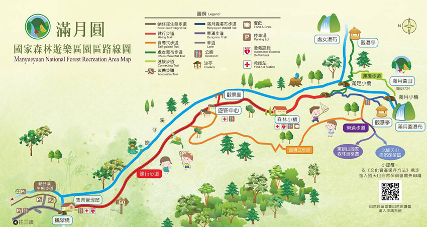
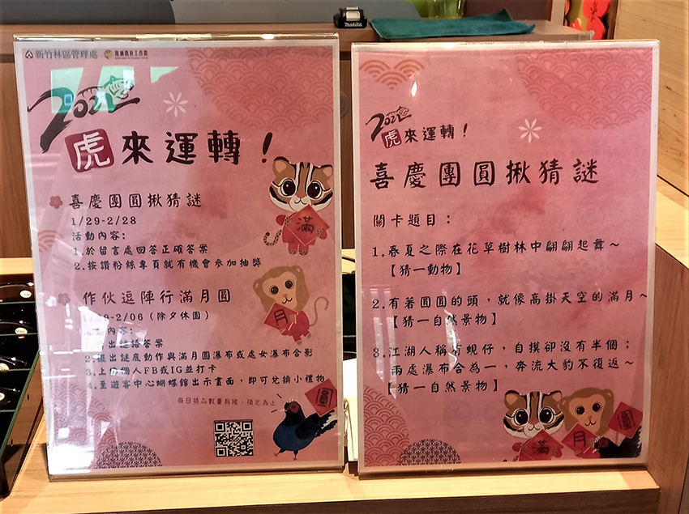
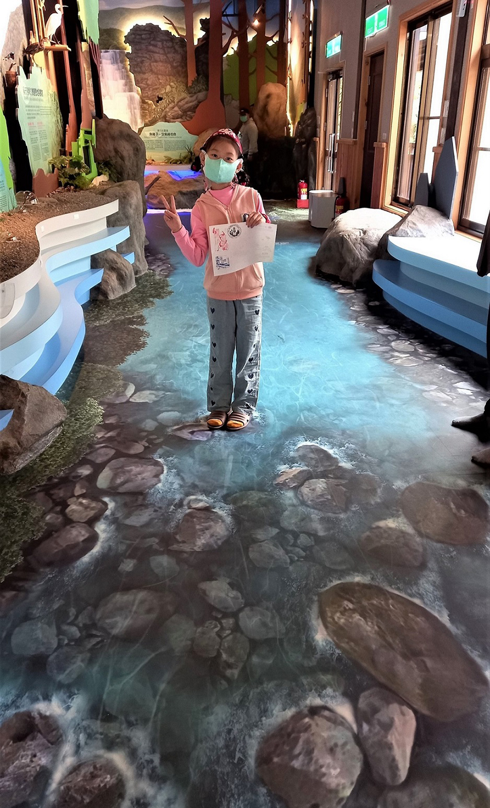
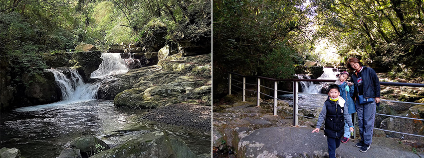

今年春節期間一直都陰雨綿綿，再加上Omicron疫情一直未見好轉，大部份的時間都待在家。好不容易在快要收假的星期日，天氣終於放晴了~ 二話不說趕緊來安排一個親子行程，順便小小運動一下，也讓小孩動一動、收收心。不過，對於我這種天天坐辦公室的肉雞，爬百岳就不用了，還是挑個難度一顆星的親子休閒步道比較適合我。
出發前先從中央氣象局的網站上查好了當天的天氣，預報是不會下雨的，就決定衝一把。跟三五好友約一約。為了避開人潮，當天一早還不到9:00，我們就在滿月圓森林遊樂區門口集合。大家輕裝上陣，穿著輕便的休閒服及運動鞋，背上小包包，帶個水壺，出發前往滿月圓吸收森林芬多精囉！
滿月圓國家森林遊樂區位於新北市三峽區，因周遭的山景渾圓，且山頭的形狀就像滿月一樣的滿月圓山而得名。滿月圓整個園區主要是由滿月圓山、熊空南山、北插天山、拉卡山、東眼山等山峰所環繞的谷地，內有蚋仔溪流經(蚋仔溪就是大豹溪的上游支流)。園區內有滿月圓瀑布和處女瀑布。步道的部份也有五條難度不一的選擇。我們是走最簡單的那一個 -- 「健行步道」接「滿月圓瀑布步道」，從售票口至遊客中心，一路上是柏油路為主，非常平緩好走。如果是很有經驗的山友，可以走「自導式步道」接「東滿步道」再往東眼山，來個O型環狀大縱走，大概要花個一整天才走得完吧！
|  |
我們走的步道邊就是蚋仔溪，聽著潺潺流水，蟲鳴鳥叫。大概是小孩太久沒出來放風了，一路上兩個小孩就跟野放的動物一樣，一路往前跑，還時不時的聽到他們唱歌聊天的笑語聲。大人們就跟在後面一路悠栽的聊著天，交換著春節期間聽到的一些八卦消息，一面也不忘喊著跑在前面的小孩走慢一點，要等等後頭的我們。
走著走著，很快就到了「遊客中心」，現在已經變成互動體驗森林親子館。新的遊客中心是由「蝴蝶館」、「溪流館」及「森林館」組成。我們先走進蝴蝶館，館內有很多以蝴蝶為主題的裝飾，還有介紹園區內可以看到的蝴蝶品種說明，旁邊還有小孩很喜歡的「主題館紀念章」，當然是要蓋好蓋滿啦! 當天配合2022壬寅虎年春節活動，還有FB或IG打卡、猜謎換禮物(扭扭蛋)的活動。
|  |
有猜到這3題的答案嗎？
第一題是「蝴蝶」，
第二題是「滿月圓」，
第三題當然就是流經園區的「蚋仔溪」啦~
|  |
溪流館也很特別，進入前需要先換館內專用室內鞋。裡頭介紹園區內附近河流生態，地板畫上3D溪流圖案，用手機拍照下來真的很像是站在真的溪流中。溪流圖案的兩邊還放有一些仿生植物及一些實際動物的標本，配合解說人員的講解，真的更有一種身歷其境的感受。
離開遊客中心後再往前走一段路，就可以看到「森林小舖」，我們在這裡買了一些豆干、毛豆、茶葉蛋，補充一下都市肉雞的體力，並且提醒小孩，別吃太多，等等下山會再過來買點吃吃喝喝的慰勞一下自己辛苦的運動。
休息夠了之後，我們就往「滿月圓瀑布」前進。接下來的路線一改之前平緩上升的柏油路，映入眼前的是一段又一段蜿延向上的階梯。我們調整好呼吸，一步一腳印的慢慢向上，走過「滿足小橋」，就可以看到一處瀑布。小孩問說，這就是「滿月圓瀑布」了嗎？我有點喘，只能搖搖頭，過了2秒才說：「不，這不是滿月圓瀑布，可能只是滿月圓瀑布下層的小瀑布」。
小孩繼續很有力的往上衝，還好我們健行的時間人不太多，不然應該會一直聽到我大喊小孩等等我的聲音 (好丟臉呀！) 。再走不用多久，就看到真正的「滿月圓瀑布」。哇~~~ 壯麗又氣勢磅礡的瀑布挾帶千軍萬馬的水勢奔流而下，好狀觀呀！在瀑布美景前大家合影留念，還不忘要記得在瀑布前擺好姿勢拍照、上傳至FB打卡，才能再回到遊客中心換小禮物。(還好我只有2個小孩，爸媽的手機一人上傳/打卡一次，剛剛好。如果有3位小孩的家長可能就要頭大了，是要跟路人借帳號打卡嗎？)
|  |
提供一個tips，要開車前往滿月圓的話，一開始會先看到第一、二停車場，千萬不要停在這裡呀！再往上開還會有第三、四停車場 (離售票口比較近)。如果不幸停到第一停車場，就需要徒步往上，一路上坡走個500公尺左右才會看到售票亭。
找個時間，也跟森林來個約會，走一趟三峽滿月圓吧！